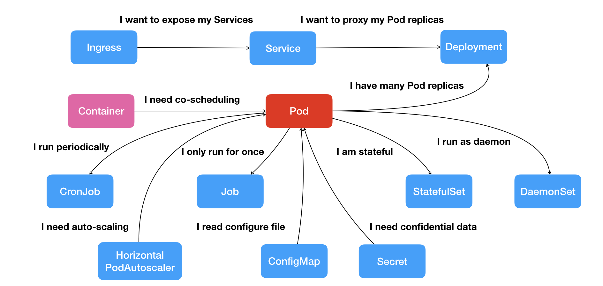
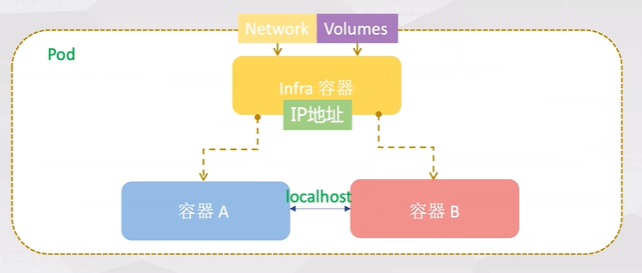
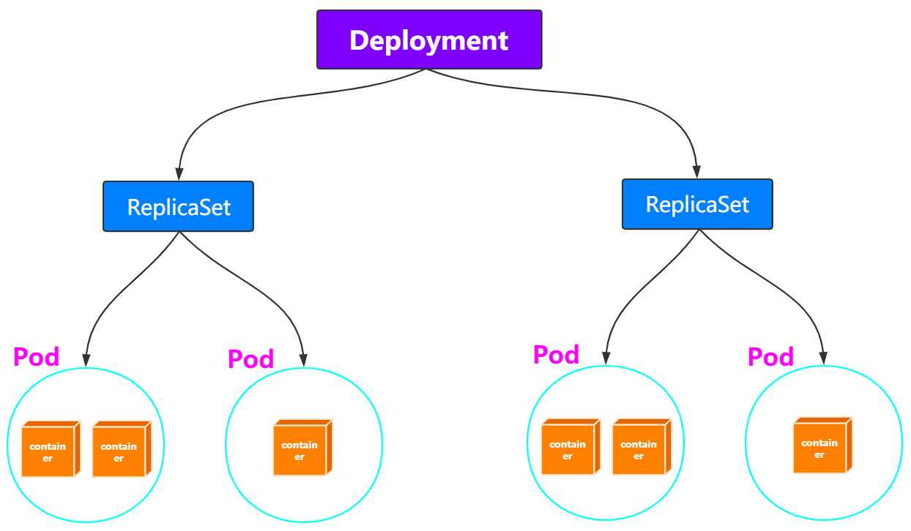

资源对象
关系

- Pod：容器间紧密协作；
- Deployment：依次启动多个应用的实例；
- Service：固定的IP地址和端口以负载均衡的形式访问；
- Secret：授权信息，以键值对数据保存在etcd；
- Job：一次性运行的Pod；
- DaemonSet：宿主机必须且只能运行一个副本的守护进程服务；
- CronJob：定时任务；
Pod
解决容器间紧密协作关系的问题。
基础容器（Pause）
Pod里的容器共享同一个Network Namespace、同一组Volume，实现高效的信息交换。
容器的“单进程”模型不是指容器里只能运行“一个”进程，而是指容器无法管理多个进程。
- 用户编写的正常的应用不是操作系统里的init进程或者systemmd具有进程管理的功能，无法解决多进程间状态一致性的管理问题；
Pod中有基础容器，称为 pause容器或者infra容器，pause容器主要为每个业务容器提供以下功能：
- PID命名空间：Pod中的不同应用程序可以看到其他应用程序的进程ID；
- 默认
shareProcessNamespace默认false，不共享进程命名空间； -
pause进程作为每个
pod的PID 1进程（根进程），并回收僵尸进程。 -
网络命名空间：Pod中的多个容器能够访问同一个IP和端口范围；
- IPC命名空间：Pod中的多个容器能够使用SystemV IPC或POSIX消息队列进行通信；
- UTS命名空间：Pod中的多个容器共享一个主机名；
- 存储空间：Pod中的各个容器可以访问在Pod级别定义的Volumes。

Pause容器的源码
/*
Copyright 2016 The Kubernetes Authors.
Licensed under the Apache License, Version 2.0 (the "License");
you may not use this file except in compliance with the License.
You may obtain a copy of the License at
http://www.apache.org/licenses/LICENSE-2.0
Unless required by applicable law or agreed to in writing, software
distributed under the License is distributed on an "AS IS" BASIS,
WITHOUT WARRANTIES OR CONDITIONS OF ANY KIND, either express or implied.
See the License for the specific language governing permissions and
limitations under the License.
*/
#include <signal.h>
#include <stdio.h>
#include <stdlib.h>
#include <sys/types.h>
#include <sys/wait.h>
#include <unistd.h>
static void sigdown(int signo) {
psignal(signo, "Shutting down, got signal");
exit(0);
}
static void sigreap(int signo) {
while (waitpid(-1, NULL, WNOHANG) > 0);
}
int main() {
if (getpid() != 1)
/* Not an error because pause sees use outside of infra containers. */
fprintf(stderr, "Warning: pause should be the first process\n");
if (sigaction(SIGINT, &(struct sigaction){.sa_handler = sigdown}, NULL) < 0)
return 1;
if (sigaction(SIGTERM, &(struct sigaction){.sa_handler = sigdown}, NULL) < 0)
return 2;
if (sigaction(SIGCHLD, &(struct sigaction){.sa_handler = sigreap,
.sa_flags = SA_NOCLDSTOP},
NULL) < 0)
return 3;
for (;;)
pause();
fprintf(stderr, "Error: infinite loop terminated\n");
return 42;
}
pause容器不仅仅调用pause()使进程休眠，并假定自己为PID 1的角色，当僵尸进程被其父进程孤立时，通过调用wait来获取僵尸进程(见sigreap)。 这样一来就不会在Kubernetes pod的PID命名空间中堆积僵尸进程。
Init容器（initContainers）
Init 容器是一种特殊容器，在 Pod 内的应用容器启动之前运行。Init 容器可以包括一些应用镜像中不存在的实用工具和安装脚本。
Init 容器与普通的容器非常像（包括重启策略），除了如下两点：
- 它们总是运行到完成。
- 每个都必须在下一个启动之前成功完成。
apiVersion: apps/v1
kind: Deployment
metadata:
labels:
app: test-init
name: test-init
namespace: kube-public
spec:
replicas: 1
selector:
matchLabels:
app: test-init
template:
metadata:
labels:
app: test-init
spec:
volumes:
- name: data
emptyDir: {}
initContainers:
- name: fix-permissions
image: busybox
command: ["sh", "-c", "chown -R 1000:1000 /usr/share/elasticsearch/data"]
securityContext:
privileged: true
volumeMounts:
- name: data
mountPath: /usr/share/elasticsearch/data
- name: increase-vm-max-map
image: busybox
command: ["sysctl", "-w", "vm.max_map_count=262144"]
securityContext:
privileged: true
containers:
- image: nginx
imagePullPolicy: IfNotPresent
name: test-init
volumeMounts:
- name: data
mountPath: /mnt
边车容器（sidecar）
容器设计模式中的组合操作，在一个Pod启动一个辅助容器（InitContainer），来完成一些独立于主进程（主容器）的工作。
- 应用服务war包容器 + tomcat容器；
- 日志收集容器 + 主应用容器；
- Istio微服务治理；
生命周期和重启策略
Pod阶段
Pod的状态（阶段, phase）：
- Pending：Pod 定义正确，但Pod内还有至少一个容器的镜像没有创建；
- Running：Pod内容器均已创建，且至少一个容器处于运行状态、正在启动状态或正在重启状态；
- Succeeded：Pod内容器均成功执行后退出，且不会再重启；
- Failed：Pod内容器均已退出，但至少一个容器为退出失败状态；
- Unknown：某种原因无法获取Pod状态，如网络通信不畅；
Pod状态中的状况（condition）：
容器的状态
Waiting：容器并不处在 Running 或 Terminated 状态之一，它就处在 Waiting 状态
Running：容器正在执行状态并且没有问题发生
Terminated：已经开始执行并且或者正常结束或者因为某些原因失败
容器生命周期回调
PostStart：在容器被创建之后立即被执行。 但不能保证回调会在容器入口点（ENTRYPOINT）之前执行。
PreStop：因 API 请求或者管理事件（诸如存活态探针、启动探针失败、资源抢占、资源竞争等） 而被终止之前
Job类型的Pod完成时，不会触发 PreStop；
重启策略
应用于Pod内的所有容器，pod.spec.restartPolicy
- Always：默认，任何情况下，只要容器不在运行状态，就自动重启容器；
- OnFailure：容器以非 0 状态退出或者被系统终止；（比如对于FAAS等短时间应用）
- Never：从不重启容器。（关心容器退出后的日志、文件、目录等信息）
简言之：
- Always和OnFailure：容器异常，Pod会保持Running的状态并重启容器；
- Never：包含多个容器的Pod，只有其中所有容器都进入异常状态后，Pod才会进入Failed状态。在此之前，Pod都是Running状态，其Ready字段显示正常的容器个数。
容器的健康检查
Pod里的容器的健康检查：支持exec执行命令（返回0表示健康），或者httpGet，tcpsocket请求；
livenessProbe：指示容器是否正在运行。- 存活态探测失败，则 kubelet 会杀死容器， 并且容器将根据其重启策略决定；
- 如果容器不提供存活探针， 则默认状态为 Success。
readinessProbe：指示容器是否准备好为请求提供服务- 就绪态探测失败， 端点控制器将从与 Pod 匹配的所有Services的端点列表中删除该 Pod 的 IP 地址；
-
容器不提供就绪态探针，则默认状态为
Success。 -
startupProbe：指示容器中的应用是否已经启动 - 提供了启动探针，则所有其他探针都会被 禁用，直到此探针成功为止；
- 启动探测失败，
kubelet将杀死容器，而容器依其重启策略进行重启； - 如果容器没有提供启动探测，则默认状态为
Success。
spec:
containers:
- name: liveness
image: k8s.gcr.io/busybox
args:
- /bin/sh
- -c
- touch /tmp/healthy; sleep 30; rm -rf /tmp/healthy; sleep 600
livenessProbe:
exec:
command:
- cat
- /tmp/healthy
initialDelaySeconds: 5
periodSeconds: 5
startupProbe:
httpGet:
path: /healthz
port: liveness-port
failureThreshold: 30
periodSeconds: 10
PodPreset
定义PodPreset对象，会自动追加到对应的Pod定义的yaml文件里。
apiVersion: settings.k8s.io/v1alpha1
kind: PodPreset
metadata:
name: allow-database
spec:
selector:
# 在带有 role:frontend 标签的Pod对象中追加下面的env配置
matchLabels:
role: frontend
env:
- name: DB_PORT
value: "6379"
Cmd/Args
同时在kubernetes中的yaml文件中写了command和args的时候，默认是会覆盖DockerFile中的命令行和参数，完整的情况分类如下：
- 如果command和args都没有写，那么用
DockerFile默认的配置。 - 如果command写了，但args没有写，那么Docker默认的配置会被忽略而且仅仅执行
.yaml文件的command（不带任何参数的）。 - 如果command没写，但args写了，那么Docker默认配置的ENTRYPOINT的命令行会被执行，但是调用的参数是
.yaml中的args。 - 如果command和args都写了，那么Docker默认的配置被忽略，使用
.yaml的配置。
卷挂载传播
挂载传播提供共享卷挂载的能力, 它允许在同一个 Pod，甚至同一个节点内，在多个容器之间共享卷的挂载。即在容器或 host 内的挂载目录中 再 mount 一个别的挂载。
由 Container.volumeMounts 的 mountPropagation 字段控制：
None:容器内和host的后续挂载完全隔离，这种卷挂载将不会收到任何后续由host创建的在这个卷上或其子目录上的挂载。同样的, 由容器创建的挂载在host上也是不可见。HostToContainer:- 这种卷挂载将会收到之后所有的由host创建在该卷上或其子目录上的挂载。换句话说, 如果host在卷挂载内挂载的任何内容, 在容器中都是可见的。同样, 如果任何具有Bidirectional的 Pod 挂载传播到该卷挂载上, 具有HostToContainer的挂载传播都可以看见。Bidirectional:- 这种挂载机制和HostToContainer类似。此外, 任何在容器中创建的挂载都会传播到host, 然后传播到使用相同卷的所有 Pod 的所有容器。注意:Bidirectional挂载传播是很危险的。可能会危害到host的操作系统。因此只有特权securityContext: privileged: true容器在允许使用它。
配置
通常你不需要直接创建 Pod，甚至单实例 Pod。 相反，你会使用诸如 Deployment或 Job这类工作负载资源来创建 Pod。
apiVersion: v1
kind: Pod
metadata:
name: nginx
labels:
env: test
spec:
# 将pod调度到kube-01节点上运行（调度优先级最高）
nodeName: kube-01
# 将pod调度到具有disktype=ssd标签的节点上（预被废弃）
nodeSelector:
disktype: ssd
# 亲和性
affinity:
# 节点
nodeAffinity:
# 在每次调度时考虑，执行期间标签不满足时，不会重新调度
requiredDuringSchedulingIgnoredDuringExecution:
nodeSelectorTerms:
- matchExpressions:
- key: kubernetes.io/e2e-az-name
operator: In
values:
- e2e-az1
- e2e-az2
# 在/ect/hosts中添加域名到ip的映射
hostAliases:
- ip: "10.2.1.2"
host.names:
- "foo.remote"
- "bar.remote"
# Pod里的容器共享PID Namespace（默认是开启）
shareProcessNamespace: true
# 容器重启策略（Always，Never，OnFailure），默认为Always
restartPolicy: Always
# 节点容忍性（能够在k8s master节点上运行）
tolerations:
- key: node-role.kubernetes.io/master
operator: Exists
effect: NoSchedule
# init容器的配置（依次执行并退出）
initContainers:
- image: geektime/sample:v2
name: war
command: ["cp", "/sample.war", "/app"]
volumeMounts:
- mountPath: /app
name: app-volume
containers:
- name: cat-hosts
image: nginx
lifecycle:
# postStart启动时，ENTRYPOINT可能尚未结束
postStart:
exec:
command: ["/bin/bash", "-c", "echo Hello from the postStart handler > /usr/share/message"]
# 优雅退出
preStop:
exec:
command: ["/usr/bin/nginx", "-s", "quit"]
command:
- cat
args:
- "/etc/hosts"
ports:
- containerPort: 80
name: web
# 主机的端口号（一般不用，而是通过Service进行负载均衡）
hostPort: 2039
# 容器的健康检查
livenessProbe:
exec:
command:
- cat
- /tmp/healthy
initialDelaySeconds: 5
periodSeconds: 5
# 就绪检测超过2s后，kubelet不会重新启动Pod，而是将流量路由到其他健康的Pod上。
# 等到Pod不再过载后，kubelet会将Pod重新加回到原来的Service中。
readinessProbe:
httpGet:
path: /
port: 8080
timeoutSeconds: 2
Deployment
ReplicaSet
Deployment管理是ReplicaSet，ReplicaSet管理的是Pod。

只允许restartPolicy=Always
- ReplicaSet通过控制器模式保证系统中的Pod的个数永远等于指定个数(replica的值)；
滚动更新
修改Deployment的Pod模板后，自动触发“滚动更新”：服务多实例部署时在线升级
- 根据新的Pod模板，创建新的ReplicaSet，初始副本数为0；
- 新的ReplicaSet副本数逐渐增多，旧的ReplicaSet副本数逐渐减少；
spec.strategy,type定义升级策略，滚动升级对应RollingUpdate，配置：
maxSurge：除配置的Pod副本数量外，一次滚动更新中Deployment控制器创建多少新Pod；maxUnavailable：一次滚动更新中Deployment控制器删除多少旧Pod；
ReplicaSet的历史版本保留配置：
- 每次Deployment的更新，都会生成新的ReplicaSet；
spec.revisionHistoryLimit字段，限制保留的历史版本的个数，设置为0，就不能回滚。
配置
template字段是PodTemplate，定义Pod的相关内容（跟Pod的定义一致）
apiVersion: v1
kind: Depolyment
metadata:
name: nginx-deployment
spec:
# 应用到 app:nginx 标签的Pod对象中
selector:
matchLabels:
app: nginx
replicas: 2
# 滚动升级配置
stragegy:
type: RollingUpdate
rollingUpdate:
maxSurge: 1
maxUnavaliable: 1
# 以下内容是Pod的标准定义
template:
metadata:
labels:
app: nginx
spec:
container:
...
StatefulSet
有状态应用：实例之间关系不对等，或者实例对外部数据有依赖的应用。（如主从复制的mysql集群）
- StatefulSet控制器直接管理的是Pod，对每个Pod的hostname、名字等都携带编号，加以区分；
- 通过headless service为有编号的Pod，在DNS中生成带有相同编号的DNS记录；
- 为Pod分配以额相同编号的PVC（Persistent Volume Claim），保证重启后，重新匹配到相同的PVC；
配置
DaemonSet
Pod在K8s的每个节点上运行，且只运行一个实例，且随着新节点加入会自动创建：
- 用于网络插件，存储插件，监控和日志组件；
DaemonSet Controller从etcd获取所有节点列表，遍历判断每个节点上是否有name: fluentd-elasticsearch标签的Pod运行。
- 多则删，调用K8s的API；
- 无则加，通过
nodeAffinity，只在该节点上运行；通过toleration保证在节点上可以运行Pod；
更新
像Deployment一样可以将DaemonSet进行滚动更新，和回滚到历史版本。
ControllerRevision：专门记录Controller对象的版本，通用的版本管理对象（包括StatefulSet等）。
配置
apiVersion: apps/v1
kind: DaemonSet
metadata:
name: fluentd-elasticsearch
# 名空间
namespace: kube-system
labels:
k8s-app: fluentd-logging
spec:
selector:
matchLabels:
name: fluentd-elasticsearch
# Pod的定义
template:
metadata:
labels:
name: fluentd-elasticsearch
spec:
...
Job
Job 中 Pod 的 RestartPolicy 只能设置为 Never 或 OnFailure 之一。
Job 完成时不会再创建新的 Pod，不过已有的 Pod 也不会被删除，Job对象也会保留。
- 保留这些 Pod 使得你可以查看已完成的 Pod 的日志输出，以便检查错误、警告 或者其它诊断性输出。
配置
不需要定义spec.selector描述需要控制哪些Pods。
- Job Controller会自动为Pod模板加上
controller-uid=<随机字符串>的标签，并在Job对象本身添加该标签对应的selector。
apiVersion: batch/v1
kind: Job
metadata:
name: pi
spec:
# Pods的配置
template:
spec:
containers:
- name: pi
image: perl
command: ["perl", "-Mbignum=bpi", "-wle", "print bpi(2000)"]
restartPolicy: Never
# 作业失败的重试次数
backoffLimit: 4
# 同时运行的Pod的最大数量（默认1）
parallelism: 4
# 最少要完成的Pod的数量（默认1）
completions:
# 限制运行时长
activeDeadlineSeconds: 100
CronJob
定时Job，管理Job对象的控制器。
在某些情况下，可能会创建两个 Job，或者不会创建任何 Job。 我们试图使这些情况尽量少发生，但不能完全杜绝。因此，Job 应该是 幂等的。
未能在调度时间内创建 CronJob当作一次miss，（指定的时间内）连续miss的数目超过100时，CronJob会停止创建该Job。
spec.startDeadlineSeconds：（指定的时间内）
spec.concurrencyPolicy：
- Allow：Job可以同时存在；
- Forbid：不会创建新Job，该创建周期被跳过；
- Replace：产生新的Job替换旧的、未执行完的Job。
# ┌───────────── 分钟 (0 - 59)
# │ ┌───────────── 小时 (0 - 23)
# │ │ ┌───────────── 月的某天 (1 - 31)
# │ │ │ ┌───────────── 月份 (1 - 12)
# │ │ │ │ ┌───────────── 周的某天 (0 - 6) （周日到周一；在某些系统上，7 也是星期日）
# │ │ │ │ │
# │ │ │ │ │
# │ │ │ │ │
# * * * * *
配置
apiVersion: batch/v1
kind: CronJob
metadata:
name: hello
spec:
schedule: "*/1 * * * *"
# 并行执行的配置
concurrencyPolicy: Forbid
# job的模板
jobTemplate:
spec:
template:
spec:
containers:
- name: hello
image: busybox
imagePullPolicy: IfNotPresent
command:
- /bin/sh
- -c
- date; echo Hello from the Kubernetes cluster
restartPolicy: OnFailure
Service
Service用于为一组提供服务的Pod抽象一个稳定的网络访问地址；
- 服务注册、服务发现、服务负载均衡等；
Pod 绑定Service服务，Service服务声明的IP地址等信息是固定不变的，Service作为Pod的代理入口（Portal）。
负载均衡原理
通过kube-proxy配置iptables或者通过ipvs进行转发处理。
会话保持机制
支持通过sessionAffinity实现基于客户端IP的会话保持机制，并且可以配置会话保持的最长时间：
# ....
spec:
sessionAffinity: CientIP
sessionAffinityConfig:
clientIP:
timeoutSeconds: 10800
prots:
- protocol: TCP
port: 8080
targetPort: 8080
selector:
app: webapp
外部服务定义为Service
常见应用场景：
- 已部署的集群外服务，如数据库服务、缓存服务等；
- 其它K8s集群的某个服务等；
创建Service时候不设置Label Selector（后端Pod也不存在），同时在定义一个与Service关联的Endpoint对象，在Endpoint中设置外部服务的IP和Port：
apiVersion: v1
kind: Endpoint
metadata:
name: my-service
subsets:
- addresses:
- IP: 1.2.3.4
ports:
- port: 80
Service类型
为一组Pod抽象一个稳定的网络访问地址，提供服务注册、服务发现、服务负载均衡等。
port和nodePort都是service的端口，前者暴露给k8s集群内部服务访问，后者暴露给k8s集群外部流量访问。
从上两个端口过来的数据都需要经过反向代理kube-proxy，流入后端pod的targetPort上，最后到达pod内的容器。
ClusterIP模式
默认，分配一个集群内部可以访问的虚拟IP（VIP）
- Services的VIP（Virtual IP）方式：vip将请求转发到某一个Pod上；
- Service的DNS方式：通过域名解析成对应ip
- Normal Service：解析后的ip就是Service的vip；
- Headless Service：没有ClusterIP（None），解析出的是所有的Pod的ip:port地址列表；
- dns记录域名为：
<pod-name>.<svc-name>.<namespace>.svc.cluster.local
NodePort模式
在每个Node上分配一个端口作为外部访问入口，默认kube-proxy会在全部网卡(0.0.0.0)绑定NodePort的端口号。
- 不指定，可以自动分配；
LoadBalancer模式
工作在特定的Cloud Provider上，例如Google Cloud，AWS，OpenStack
ExternalName模式
将Service映射为一个外部域名地址，通过exeternalName字段进行设置
配置
正常情况下，service的port和pod镜像开放的端口一致。
比如nginx的镜像是开放80端口，service的port指定的是80端口，那么pod和pod直接就可以进行访问，不用指定targetPort端口
apiVersion: v1
kind: Service
metadata:
name: nginx-svc
labels:
app: nginx
spec:
ports:
- protocol: tcp
# service暴露在cluster ip上的端口，服务间内部使用
port: 80
# 节点上的端口，给外部直接通过节点ip:port访问（NodePort模式使用）
nodePort: 8090
# 容器里的端口
targetPort: 8081
name: web
# ClusterIP模式（默认）：不指定时，自动分配
# 指定为None时，属于Headless模式
clusterIP: None
# 指定为 NodePort模式
type: NodePort
# 选择pod(根据对应的label: app=nginx)
selector:
app: nginx
Ingress
HTTP/HTTPS 根据 url 进行转发，作为Edge Router，将集群外的客户端请求路由到集群内部的服务上；
默认的 Ingress 是基于 NGINX 实现的。NGINX Ingress Controller 帮助维护了 Kubernetes 集群与 NGINX 的状态同步，并且提供了基本的反向代理能力。
Apache APISIX Ingress
Project Volumes
为容器提供预先定义好的数据，被k8s注入到容器中。
Secret、ConfigMap、Downward API三种信息，可以通过环境变量的方式出现再容器里，但是不具备自动更新的能力。
Secret
把Pod想要访问的加密数据存储到etcd中，通过Pod的容器挂载Volume的形式访问Secret里的信息。
Secrent的加密是插件，需要单独配置。
在容器中会生成${container_mount_path}/${secret_name}文件，文件内容为对应的值，且etcd中值更新时，文件内容也会更新。
kubernetes.io/dockerconfigjson
作为 docker 私有镜像的认证配置，通过
apiVersion: v1
kind: Secret
type: kubernetes.io/dockerconfigjson
# 私有镜像的
metadata:
name: hubsecret-go
namespace: test
data:
.dockerconfigjson: eyJhdXRocyI6eyJ1YXQuc2YuZG9ja2VyaHViLnN0Z3dlYmFuayI6eyJ1c2VybmFtZSI6ImJkcCIsInBhc3N3b3JkIjoiYmRwQHdlaHViIiwiZW1haWwiOiJsdWNrbGl1QHdlYmFuay5jb20iLCJhdXRoIjoiWW1Sd09tSmtjRUIzWldoMVlnPT0ifX19
Pod中使用时imagePullSecrets：
apiVersion: apps/v1
kind: Deployment
metadata:
name: deployment_service
namespace: test
spec:
imagePullSecrets:
- name: hubsecret-go
ConfigMap
与Secret的区别是，ConfigMap存储无需加密、应用所需的配置信息。
apiVersion: v1
kind: ConfigMap
metadata:
# 配置名称为cc-go-config
name: cc-go-config
namespace: test
data:
application-name: Test
使用
Pod的使用方式：
- 将ConfigMap中的数据设置为容器的环境变量
- 将ConfigMap中的数据设置为命令行参数
- 使用Volume将ConfigMap作为文件或目录挂载
- 编写代码在 Pod 中运行，使用 Kubernetes API 来读取 ConfigMap
Downward API
Pod里的容器能够直接获取这个Pod API对象本身的信息（容器进程启动之前就确定的信息）。
ServiceAccountToken
Service Account对象的作用是Kubernetes内置的一种“服务账户”，是K8s进行权限分配的对象。
Service Account的授权信息和文件，作为特殊的Secret，存在容器里的/var/run/secrents/kubernetes.io/serviceaccount目录，Pods会自动挂载一个类型为Secret，名为default-token-***的Volume。
PV
持久化卷， 支持本地存储和网络存储，支持两个属性， capacity和accessModes：
- accessModes：ReadWriteOnce（被单个node读写）， ReadOnlyMany（被多个nodes读）， ReadWriteMany（被多个nodes读写）；
重声明策略(reclaim policy)：用户删除PVC释放对PV的占用后，系统根据PV的"reclaim policy"决定对PV执行何种回收操作
- Retain – 手动重新使用
- Recycle – 基本的数据擦除 (“rm -rf /thevolume/*”)
- Delete – 移除PV对象和相关联的后端存储卷删除， 后端存储比如AWS EBS, GCE PD, Azure Disk, or OpenStack Cinder
节点亲和性（NodeAffinity）
- 限制哪些节点能够访问该PV
需要特别注意的是只有本地盘和nfs支持数据盘Recycle 擦除回收
apiVersion: v1
kind: PersistentVolume
metadata:
name: pv0003
spec:
capacity:
storage: 10Gi
accessModes:
- ReadWriteOnce
persistentVolumeReclaimPolicy: Recycle
storageClassName: slow
nfs:
path: /tmp
server: 172.17.0.2
PVC
pvc － 对 pv 资源的请求
kind: PersistentVolumeClaim
apiVersion: v1
metadata:
name: myclaim
spec:
accessModes:
- ReadWriteOnce
resources:
requests:
storage: 8Gi
storageClassName: slow
selector:
matchLabels:
release: "stable"
matchExpressions:
- {key: environment, operator: In, values: [dev]}
在PVC中绑定一个PV，可以根据下面几种条件组合选择
Access Modes， 按照访问模式选择pvResources， 按照资源属性选择， 比如说请求存储大小为8个G的pvSelector， 按照pv的label选择Class， 根据StorageClass的class名称选择, 通过annotation指定了Storage Class的名字, 来绑定特定类型的后端存储
PVC保护(partition)
有用户删除了仍处于某pod资源使用中的PVC时，Kubernetes不会立即予以移除，而是推迟到不再被任何pod资源使用后方才执行删除操作；
处于此种阶段的PVC资源的status字段为termination并且其Finalizers字段中包含kubernetes.io/pvc-protection
VolumeAttachment
MutatingWebhookConfiguration（TODO）
Operator
更灵活、更编程友好的管理“有状态应用”的解决方案。
利用K8s的CRD描述我们想要部署的“有状态应用”，在自定义控制器里根据自定义API对象的变化，完成具体的部署和运维工作。